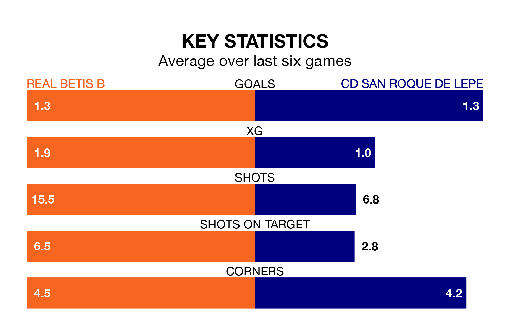

Real Betis B face CD San Roque de Lepe on Sunday seeking to protect their formidable unbeaten run in Segunda División RFEF Group 4.
Betis B are unbeaten in eight, with three wins and five draws, ahead of the 10.30am kick-off.
They face a San Roque de Lepe team who have won three and lost five over the same number of games.
With 27 goals in 20 games so far this season, Betis B are the league's third-highest scorers with 1.4 goals per game. And they are conceding fewer than average, letting in 19 goals at a rate of 0.9 per game.
San Roque de Lepe, meanwhile, are below average scorers, with 0.9 goals per game, compared to a league average of 1.0. They have conceded 1.0 goal per game.
In the last 10 years, Betis B and San Roque de Lepe have played each other on 11 occasions. They won four each, and they drew three times.
On average, Betis B scored 1.4 goals and San Roque de Lepe 1.1 in those matches.
Their last meeting was on September 23, when they played out a 1-1 draw.
The away side are 14th in the table after 20 games, of which they have won five and drawn five, earning 20 points.
The hosts are eight places ahead of San Roque de Lepe in sixth, with seven wins and nine draws putting them on 30 points.
Betis B's last match was on Sunday, a 1-1 draw against Racing Cartagena MM.
San Roque de Lepe beat La Unión Atlético 1-0 last time out, also on Sunday.
Updated: 14:12 (UTC), 02/02/24